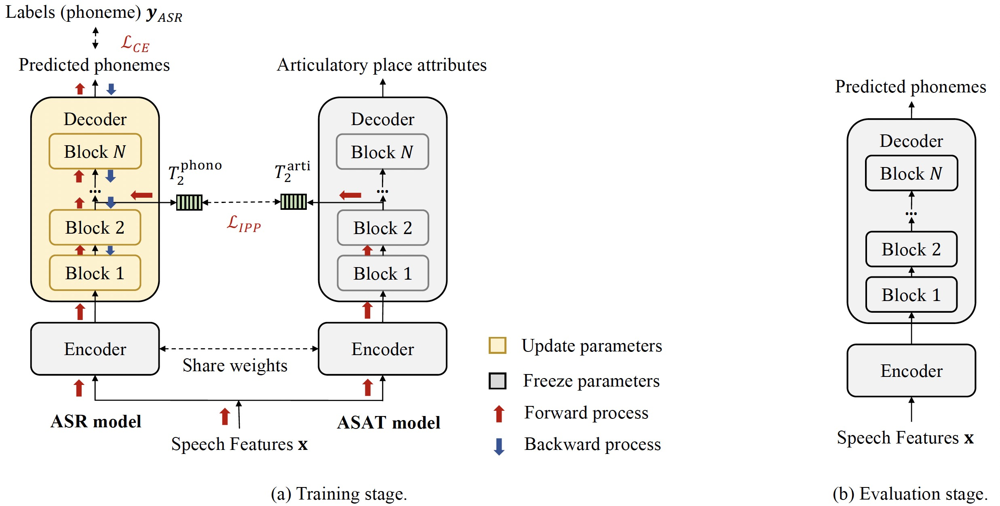
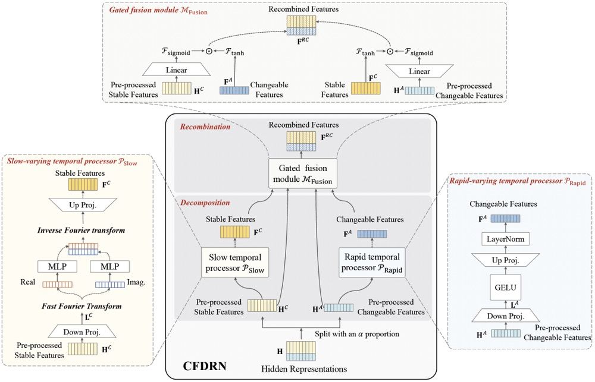
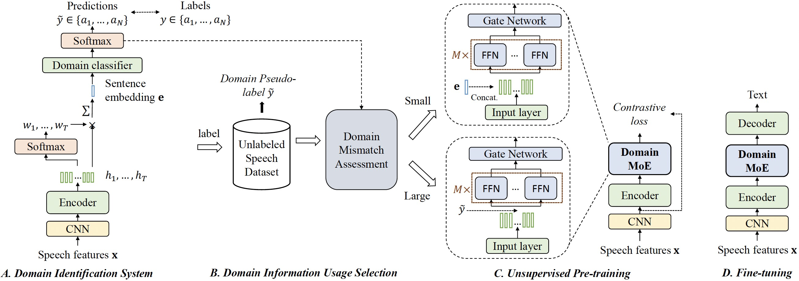
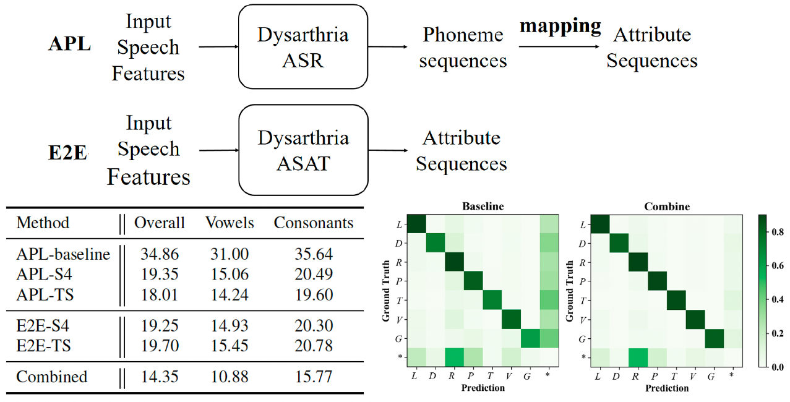
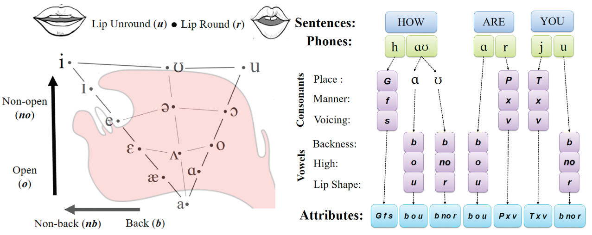

Oct. 2023 One paper is accepted by Speech Communication.
Sep. 2023 One paper is accepted by IEEE/ACM TASLP.
June. 2023 One paper is accepted by Electronics Letters.
April. 2023 Visit Minematsu's lab of the University of Tokyo, and supervised by Nobuaki MINEMATSU for one year.
Sep. 2020 - Today Ph.D student in College of Intelligence and Computing, Tianjin University.
Sep. 2018 - Jul. 2020 Master student in College of Intelligence and Computing, Tianjin University.
Sep. 2014 - Jul. 2018 Bachelor of Software Engineering in Northeast Normal University.
|  |
Disordered Speech Recognition Considering Low Resources and
Abnormal Articulation
Yuqin Lin, Jianwu Dang, Longbiao Wang, Sheng Li, Chenchen Ding Accepted by journal Speech Communication 2023 [PDF] |
|  |
CFDRN: A Cognition-Inspired Feature Decomposition and Recombination Network for Dysarthric Speech Recognition
Yuqin Lin, Longbiao Wang, Yanbing Yang, Jianwu Dang Published in journal IEEE/ACM TASLP 2023 [PDF] |
|  |
Wav2vec-MoE: An Unsupervised Pre-training and Adaptation Method for Multi-accent ASR
Yuqin Lin, Shiliang Zhang, Zhifu Gao, Longbiao Wang, Yanbing Yang, Jianwu Dang Published in journal Electronics Letters 2023 [PDF] |
|  |
Staged Knowledge Distillation for End-to-End Dysarthric Speech Recognition and Speech Attribute Transcription
|
|  |
End-to-end Articulatory Modeling for Dysarthric Articulatory Attribute Detection
|
Self-Distillation Based on High-level Information Supervision for Compressing End-to-End ASR Model
Qiang Xu, Tongtong Song, Longbiao Wang, Hao Shi, Yuqin Lin, Yongjie Lv, Meng Ge, Qiang Yu, Jianwu Dang
Published in conference Interspeech 2022
[PDF]
Finer-grained Modeling units-based Meta-Learning for Low-resource Tibetan Speech Recognition
Siqing Qin, Longbiao Wang, Sheng Li, Yuqin Lin, Jianwu Dang
Published in conference Interspeech 2022
[PDF]
Language-specific Characteristic Assistance for Code-switching Speech Recognition
Tongtong Song, Qiang Xu, Meng Ge, Longbiao Wang, Hao Shi, Yongjie Lv, Yuqin Lin, Jianwu Dang
Published in conference Interspeech 2022
[PDF]